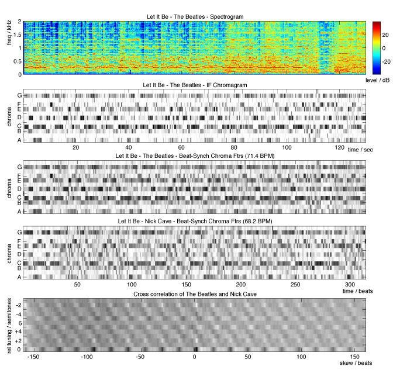

As part of our project to identify and represent the essential content of music audio, we have been looking at the problem of matching "cover versions" of popular music i.e. performances of the same piece of music by different artists with varying interpretations, styles, instrumentation, and tempos. If we can successfully recognize the common factors between two pieces differing along these axes, then we may have a description closer to what a listener `gets' from music.
Our approach is to (a) fold down the musical spectrum at each instant into 12 values corresponding to the intensity of each semitone of the musical octave (but removing the distinction between different octaves). This helps normalize for variations in instruments and different ways of realizing the same harmonic 'color'. (b) We track the beats by looking for regularly-spaced moments of maximal change in the sound, then average the 12-dimensional harmonic description to a single value for each beat. Provided the beats are correctly located, this removes the effect of tempo variations. We use a couple of possible tempos to protect against major changes in rhythmic `feel'. Finally, a cover song is identified by sliding the entire semitone-by-beat matrix for two songs over each other, looking for a good match. This includes a search over shifts in time (e.g. to find a section that matches even though it may occur at a different point in the music) and shifts in the (circular) semitone axis. A close match, even over only part of the music, is strongly indicative of a genuine cover version.
This algorithm came top in the 2006 international Music Information Retrieval Evaluation for cover song detection, held in Victoria, BC, in October. Our system found more than twice as many cover versions (from a database of 300) than the next best entrant. We are also interested in using these approaches to find similarities between different pieces of music, and to construct a `dictionary' of melodic and harmonic fragments with which large collections of music can efficiently be described.
|  |
The top pane shows the spectrogram - the distribution of energy in time
and frequency - for the 2 minutes or so of "Let It Be" by The Beatles.
After the piano intro, the vocals start at around 15 sec, the drums
come in at around 75 sec, and the organ "bridge" is clearly visible at
around 115 sec.
The second pane shows the Chromagram - energy from the spectrogram folded into 12 bins, labeled A through G according to the piano keyboard. The next two panes show Chromagrams where time has been quantized to beat-length segments as found by the beat tracker - at 71.4 BPM for the Beatles, then at 68.2 BPM for a cover version of "Let It Be" by Nick Cave. The bottom pane shows the cross-correlation (similarity score) between the previous two representations for time offsets of +/- 160 beats, and at all possible relative semitone transpositions. The sharp maximum at 0 transposition and +2 beat skew shows a clear match between these two pieces, despite a considerable variation in style, instrumentation, and even vocal melody in the Nick Cave rendition. |
See also the main cover song project page
This material is based in part upon work supported by the National Science Foundation under Grant No. IIS-0238301. Any opinions, findings and conclusions or recomendations expressed in this material are those of the author(s) and do not necessarily reflect the views of the National Science Foundation (NSF).
This work was also supported by the Columbia Academic Quality Fund.